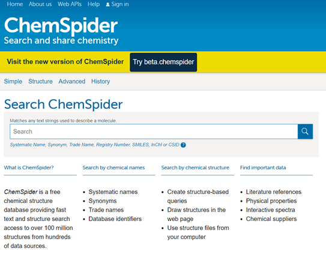
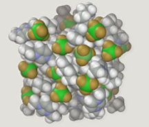
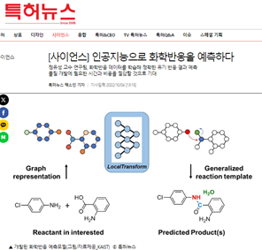
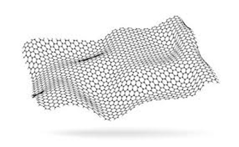
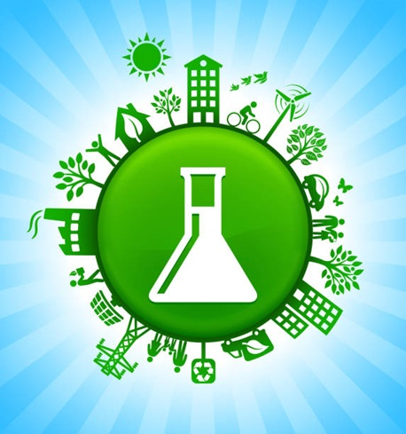
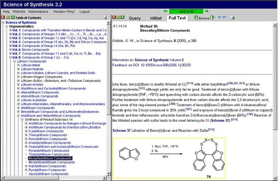

화학정보학
화학정보학(化學情報學, 영어: cheminformatics)은 컴퓨터 및 정보 기술을 적용하여 화학분야의 다양한 문제들에 대하여 적용하는 학문을 말한다.
이러한 in silico 기술은 예를 들어 제약 회사에서 신약개발 과정에 사용되며, 화학 및 관련 산업에서도 다양한 형태로 사용될 수 있다.
영상보기
화학정보학의 핵심 기술
화학 데이터 관리
분자 모델링
인공지능 학습
화학정보학의 주요 응용분야
| step 1 화학정보학에서 약물 설계 및 발견은 컴퓨터를 이용해 화합물의 생물학적 활성을 예측하고 최적화하는 과정입니다. 이 분야는 데이터베이스와 알고리즘을 활용해 잠재적 약물 후보를 식별하고 그 효과를 분석합니다. 이를 통해 약물 개발 시간을 단축하고 성공 확률을 높입니다. | ||
| step 2 화학정보학에서 재료 과학은 컴퓨터 모델링과 시뮬레이션을 통해 신소재의 특성과 성능을 예측하고 설계하는 과정입니다. 이 분야는 데이터 분석과 머신러닝을 활용해 재료의 구조-속성 관계를 이해하고 최적화합니다. 이를 통해 새로운 재료를 개발하고 기존 재료의 성능을 향상시킵니다. |
 | |
|  | step 3 화학정보학에서 환경 화학은 컴퓨터 모델링과 데이터 분석을 통해 환경 오염 물질의 분포와 영향을 예측하는 과정입니다. 이 분야는 환경 데이터를 활용해 오염 물질의 이동 경로와 생태계에 미치는 영향을 평가하고 관리합니다. 이를 통해 환경 보호와 지속 가능한 관리 전략을 개발합니다. |
|
| step4 화학정보학에서 화학 데이터베이스 개발 및 관리는 화합물, 반응, 물성 등의 데이터를 체계적으로 수집, 저장, 관리하는 과정입니다. 이 분야는 효율적인 데이터 검색과 분석을 지원하여 연구자들이 필요한 정보를 신속하게 얻을 수 있게 합니다. 이를 통해 화학 연구와 산업의 효율성을 높이고 협업을 촉진합니다. |
 | |
미래 전망
| 기술 | 기대 효과 |
|---|---|
| 인공지능 및 머신러닝의 발전, 인공지능과 머신러닝 알고리즘의 발전으로 화학 데이터의 분석과 예측이 더욱 정교해지고 신속해질 것입니다. 이를 통해 신약 개발, 신소재 발견 등의 분야에서 혁신적인 성과를 기대할 수 있습니다. | 신약 개발 가속화: 화학정보학을 통해 잠재적 약물 후보를 빠르게 식별하고 최적화할 수 있어, 신약 개발의 시간과 비용을 크게 절감할 수 있습니다. 이는 환자들에게 더 신속하게 새로운 치료 옵션을 제공할 수 있게 합니다. |
| 고성능 컴퓨팅의 확대, 고성능 컴퓨팅(HPC)과 양자 컴퓨팅의 발전은 복잡한 화학 시스템의 시뮬레이션과 모델링을 가능하게 하여, 새로운 물질과 반응 경로를 탐구하는 데 큰 도움을 줄 것입니다. | 지속 가능한 재료 개발: 환경 친화적이고 지속 가능한 신소재를 개발하는 데 화학정보학이 중요한 역할을 할 것입니다. 이는 에너지 효율성을 높이고 환경 오염을 줄이는 데 기여할 수 있습니다. |